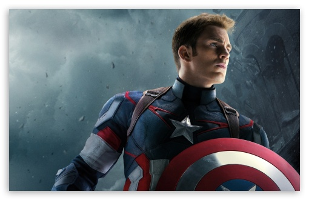

Captain America
Captain America (Steven "Steve" Rogers) is a fictional superhero appearing in American comic books published by Marvel Comics. Created by cartoonists Joe Simon and Jack Kirby, the character first appeared in Captain America Comics #1 (cover dated March 1941) from Timely Comics, a predecessor of Marvel Comics. Captain America was designed as a patriotic supersoldier who often fought the Axis powers of World War II and was Timely Comics' most popular character during the wartime period. The popularity of superheroes waned following the war and the Captain America comic book was discontinued in 1950, with a short-lived revival in 1953. Since Marvel Comics revived the character in 1964, Captain America has remained in publication.
Creation of Captain America
In 1940, writer Joe Simon conceived the idea for Captain America and made a sketch of the character in costume. "I wrote the name 'Super American' at the bottom of the page," Simon said in his autobiography, and then decided: No, it didn't work. There were too many "Supers" around. "Captain America" had a good sound to it. There weren't a lot of captains in comics. It was as easy as that. The boy companion was simply named Bucky, after my friend Bucky Pierson, a star on our high school basketball team. Simon recalled in his autobiography that Timely Comics publisher Martin Goodman gave him the go-ahead and directed that a Captain America solo comic book series be published as soon as possible. Needing to fill a full comic with primarily one character's stories, Simon did not believe that his regular creative partner, artist Jack Kirby, could handle the workload alone:
I didn't have a lot of objections to putting a crew on the first issue ... There were two young artists from Connecticut that had made a strong impression on me. Al Avison and Al Gabriele often worked together and were quite successful in adapting their individual styles to each other. Actually, their work was not too far from [that of] Kirby's. If they worked on it, and if one inker tied the three styles together, I believed the final product would emerge as quite uniform. The two Als were eager to join in on the new Captain America book, but Jack Kirby was visibly upset. "You're still number one, Jack," I assured him. "It's just a matter of a quick deadline for the first issue." "I'll make the deadline," Jack promised. "I'll pencil it [all] myself and make the deadline." I hadn't expected this kind of reaction ... but I acceded to Kirby's wishes and, it turned out, was lucky that I did. There might have been two Als, but there was only one Jack Kirby ... I wrote the first Captain America book with penciled lettering right on the drawing boards, with very rough sketches for figures and backgrounds. Kirby did his thing, building the muscular anatomy, adding ideas and popping up the action as only he could. Then he tightened up the penciled drawings, adding detailed backgrounds, faces and figures."
Powers and Abilities
Tactician and field commander
Rogers' battle experience and training make him an expert tactician and an excellent field commander, with his teammates frequently deferring to his orders in battle. Thor has stated that Rogers is one of the very few humans he will take orders from and follow "through the gates of Hades". Rogers' reflexes and senses are extraordinarily keen. He has blended Aikido, Boxing, Judo, Karate, Jujutsu, Kickboxing, and gymnastics into his own unique fighting style and is a master of multiple martial arts. Years of practice with his near-indestructible shield make him able to aim and throw it with almost unerring accuracy. His skill with his shield is such that he can attack multiple targets in succession with a single throw or even cause a boomerang-like return from a throw to attack an enemy from behind. In canon, he is regarded by other skilled fighters as one of the best hand-to-hand combatants in the Marvel Universe, limited only by his human physique. Although the super-soldier serum is an important part of his strength, Rogers has shown himself still sufficiently capable against stronger opponents, even when the serum has been deactivated reverting him to his pre-Captain America physique. Rogers has vast U.S. military knowledge and is often shown to be familiar with ongoing, classified Defense Department operations. He is an expert in combat strategy, survival, acrobatics, parkour, military strategy, piloting, and demolitions. Despite his high profile as one of the world's most popular and recognizable superheroes, Rogers has a broad understanding of the espionage community, largely through his ongoing relationship with S.H.I.E.L.D.
During the Annihilation War Thanos allies himself with the genocidal villain Annihilus. When the Annihilation Wave destroys the Kyln, Thanos sends the Fallen to check on the status of the Beyonder, whose mortal form he finds has perished. Before the Fallen can report back to Thanos it encounters Tenebrous and Aegis: two of Galactus's ancient foes. Thanos convinces Tenebrous and Aegis to join the Annihilation Wave in order to get revenge on Galactus, and they subsequently defeat the World Devourer and the Silver Surfer. Annihilus desires the secret of the Power Cosmic and asks Thanos to study Galactus. Once Thanos learns Annihilus's true goal is to use the Power Cosmic to destroy all life and remain the sole survivor, he decides to free Galactus. Drax the Destroyer kills Thanos before he can do so but discovers that Thanos had placed a failsafe device to allow Silver Surfer to free Galactus in the event that Annihilus betrayed him.[42] During a climactic battle with Annihilus, Nova is near death and sees Thanos standing with Mistress Death.
